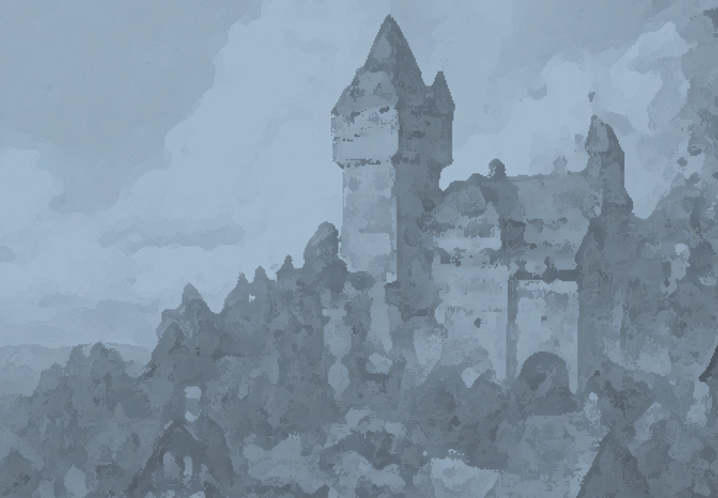

The Capital
of Asghbgahn.
Walls. Towers. Stone. The Capital of Asghbgahn is a Fortress. Is that unexpected?
The streets.
Somewhere along the way, the dirt path became a cobbled path.
It is still a path, though. An ordinary stone path, leading through the streets, up the hill, northward to The Fortress. There is not much to see here.
Onwards.
The Capital.
"The Capital" refers to the small city leading up to The Fortress. Most of the buildings sit at the foot of the hill. It is more like a town, really, with a population of 500.5 502. It is noticeably smaller than The City.
The... People?
The Capital seems completely empty. There is no one in the streets. If 502 people really live here, then 500.5 of them are inside.
ONWARDS.
The Fortress.
It looms, above and behind The Capital, a grand citadel of stone.
Perhaps it is time to go.
Go? Go onwards, of course, like you have been this entire journey.